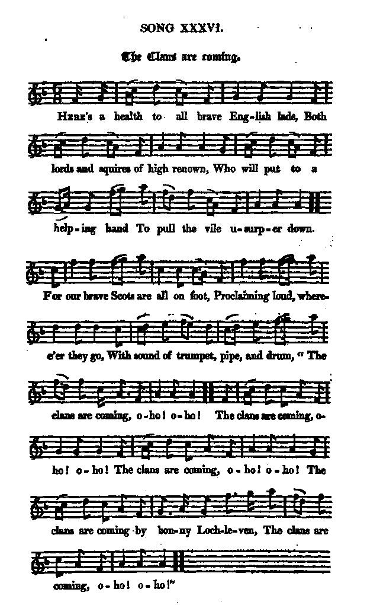

Two songs to the same tune
1° The Clans are coming
Les Clans s'avancent
The Highland army's march on London (December 1745)
L'armée des Highland marche sur Londres (décembre 1745)
From
The True Loyalist
, p.27, 1779
and from J. Ritson's "Scotish Songs", vol. II, p.85 (class III, N°21), 1794, who took it from a collection of "Loyal Songs, &c.", 1750
Tune - Mélodie
"The Campbells are coming"
from Ritson and
Hogg's "Jacobite Relics" 2nd Series
N°36, 1821
Sequenced by Christian Souchon
|
To the tune:
Hogg writes in his "Jacobite Relics, 2nd Series",(1821): [This song] "is published, with the air, in Joseph Ritson's collection [ (1752 - 1803), a well-kown English antiquary and ballad collector]. This was taken from Mr Moir's collection. [maybe a parent to Mrs Catharine Jean Moir whose "Collection of strathpeys, reels,etc.", dating 1790, was published by James Scott Skinner (1843- 1927)]. "This is a mere parody on the song of the " Campbells are coming" said to be a much older song, indeed, as old as the time of Queen Mary ['s sojorn at Lochleven Castle in 1562]. For my part I believe both songs to be of the same date and having heard it sung always in my youth, The Campbells are comin', By bonnie Loch-Lomon'- "I have no doubt that it was made about the time when colonel Campbell led 1000 Campbells out of Argyllshire, by Loch-Lomond, to join the Duke of Argyll at Stirling ." (=Sherrifmuir, 1715)." In fact, the first mention of the song is to be found in the Scottish historian Robert Wodrow (1679 - 1734)'s correspondence, published in 1843- 1844, which records that one of the 3 companies of Argyll's Highlanders entered Perth or Dundee, in 1716, led by a piper playing the "Campbells are coming". The melody was first printed as a country danse, called "Hob and Nob", in Walsh's "Caledonian Country Dances - 4th Book" c. 1745 and Johnson's "Collection of 200 Country Dances", in 1748. Source "The Fiddler's Companion" (cf. Liens). |
 |
A propos de la mélodie:
Hogg indique dans ses "Reliques Jacobites, 2ème série", (1821): [Ce chant] "est publié avec cette mélodie, dans la collection de Joseph Ritson [(1752 - 1803), célèbre antiquaire et collecteurs de ballades anglais]. La présente version provient de la collection de M. Moir [peut-être apparenté à Mme Catharine Jean Moir dont la "collection de strathpeys, reels, etc." datant de 1790, fut publiée par James Scott Skinner (1843 - 1927)]. "Il s'agit ici d'une parodie de "Les Campbell approchent" dont on affirme que c'est un chant bien plus ancien remontant à l'époque où Marie Stuart [séjournait au château de Lochleven en 1562]. Pour ma part, je crois que les deux chants datent de la même époque, et, ayant toujours entendu chanter dans ma jeunesse: "Les Campbell approchent Le long du beau Loch-Lomond... "je ne doute pas que cette date soit celle à laquelle le colonel Campbell, venant d'Argyllshire, se portait en renfort, avec 1000 Campbell, du Duc d' Argyll à Stirling ." (=Sherrifmuir, 1715)." Il est exact que l'on trouve la première mention de ce chant sous la plume de l'historien écossais Robert Wodrow (1679 - 1734), dans sa correspondance publiée en 1843 - 1844, où il note que l'une des 3 compagnies d'Argyll fit son entrée à Perth (ou à Dundee) aux accents de " les Campbell approchent", joué par un sonneur de cornemuse. La mélodie fut imprimée pour la première fois, sous forme de contredanse intitulée "Hob and Nob", par Walsh dans ses "Contredanses calédoniennes - 4ème tome" vers 1745 et par Johnson dans sa "Collection de 200 contredanses" en 1748. Source "The Fiddler's Companion" (cf. Liens). |

|
A SONG
1. Here's a health to all brave English lads, Both lords and squires of high renown, Who will put to their helping hand To see and pull the Usurper down. For our brave Scots are all on foot, Proclaiming loud, where'er they go, With sound of trumpet, pipe, and drum, ' The clans are coming, oho! oho ! The clans are coming, oho! oho! The clans are coming, oho! oho! The clans are coming by bonny Lochleven, The clans are coming, oho! oho!' 2. To set our K[in]g upon his throne, Not church, nor state, to overthrow, As wicked preachers falsely tell, The Clans are coming, oho! oho! 2.1. We will not be the slaves of France, And that we'll let each Briton know, That ne'er the ancient Scottish race, - Even we the Clans, oho! oho! 2.2 Whose brave ancestors ne'er did bow, Nor homage pay to foreign pow'rs, But to our own dear native P[rinc]e, Even we the Clans, oho! oho! 2.3 Therefore, forbear, your canting chat; Your buck-bore tails are a' for show: The stipend's the only thing you want. The clans are coming, oho! oho! The clans are coming, &c. 3. They will protect both church and state, Tho' they be thought their mortal foe; And when Hanover's at the gate, You'll bless the clans, oho! oho! Corruption, brib'ry, breach of law, Was your cant sometime ago Which did expose both court and king, . And rais'd the clans, oho! oho! The clans are coming, &c. 4.1 Those lions, for their country's sake, And lawful KING, were never slow: And now, they're come with their great P[rinc]e; The clans are coming, oho ! oho! 4.2. Rous'd like a lion from his den, When he thought on his country's wow, Our brave protector, Charles, came, With all his clans, oho! oho! The clans are coming, &c. 5. So now the clans have drawn their swords, And vow revenge against them a', That dare lift up th' usurper's arms, To fight against our K[in]g and laws. May God preserve our lawful K[in]g, And his brave Sons, the lovely two, And set him on his Father's th[ron]e, And bless his subjects high and low! The clans are coming, &c. 6. Let C[op]e and H[aw]lly witness be Who lately you did overthrow, If want of courage made you fly, With all your Clans, oho! oho! But they'll those wicked tants forbear And droop their heads with shame and woe, When you return our hearts to cheer, With all your Clans, oho! oho! 7. Return, great P[rinc]e, with all your Clans, And ease our minds of grief and woe, That we once more with joy may sing, The Clans are coming, oho! oho! Make Willie fly with all his men, We hold him as our mortal foe, But, welcome, the great P[rinc]e again, With al your Clans, oho! oho! Source: The True Loyalist, page 27, 1779 |
THE CLANS ARE COMING
1. Here's a health to all brave English lads, Both lords and squires of high renown, Who will put to a helping hand To pull the vile usurper down. For our brave Scots are all on foot, Proclaiming loud, where'er they go, With sound of trumpet, pipe, and drum, ' The clans are coming, oho! oho ! The clans are coming, oho! oho! The clans are coming, oho! oho! The clans are coming by bonny Lochleven, The clans are coming, oho ! oho!' 2. To set our king upon the throne, Not church nor state to overthrow, As wicked preachers falsely tell, The clans are coming, oho! oho! Therefore forbear, ye canting crew; Your bugbear tales are a' for show: The want of stipend is your fear. The clans are coming, oho! oho! The clans are coming, &c. 3. We will protect both church and state, Though we be held their mortal foe; And when the clans are to the gate, You'll bless the clans, oho! oho! Corruption, bribery, breach of law, This was their cant some time ago Which did expose both court and king, . And rais'd our clans, oho! oho! The clans are coming, &c. 4.2. Rous'd like a lion from his den, When he thought on his country's wo, Our brave protector, Charles, did come, With all his clans, oho! oho! 4.1. These lions, for their country's cause, And natural prince, were never slow: So now they come with their brave prince; The clans advance, oho ! oho! The clans are coming, &c. 5. And now the clans have drawn their swords, And vow revenge against them a' That lift up arms for th' usurper's cause, To fight against our king and law. Then God preserve our royal king, And his dear sons, the lovely twa, And set him on his father's throne, And bless his subjects great and sma'! The clans are coming, &c. Source: "The Jacobite Relics of Scotland, being the Songs, Airs and Legends of the Adherents to the House of Stuart" collected by James Hogg, published in Edinburgh by William Blackwood in 1819. |
LES CLANS S'AVANCENT
1. A la santé de ces braves Anglais, Ces Lords et ces châtelains renommés, Qui prêtent main forte pour nous aider A renvoyer l'usurpateur dans ses foyers. Car nos Ecossais se sont levés Proclamant où qu'ils puissent passer Au son des trompettes, des cornemuses: "Les clans s'avancent, oho! oho! "Les clans s'avancent, oho! oho! "Les clans s'avancent, oho! oho! "Les clans s'avancent tout le long du Lochleven "Les clans s'avancent, oho! oho! 2. C'est pour rendre son trône à notre roi, Non pour détruire l'église ou l'état, Vile propagande que tout cela, Qu'on voit les clans qui s'avancent, oho, oho! 2.1. Aux Français aucun n'est asservi, Les Britons se le tiennent pour dit. La race écossaise n'est pas la française; Il en est ainsi des clans, oho! oho! 2.2. Nos aïeux jamais ne se sont courbés Ni payé tribut à prince étranger. Mais devant notre prince vont s'incliner Tous nos clans, oui, même de bonne grâce. 2.3. Prenez garde, Messieurs les tricheurs Vos sornettes, racontez-les ailleurs, Vous n'avez en tête que faire la quête, Donc les clans s'avancent oho! oho! "Les clans s'avancent... 3. L'église et l'état nous les protégeons, Bien qu'on nous prête d'autres intentions, Et quand à vos portes nous sonnerons Vous bénirez ces fameux clans, oho, oho! Corruption, vénalité, délit Etaient leur penchant naturel, jadis Le trône et le juge ont voulu qu'on les purge Et firent appel aux clans oho, oho! "Les clans s'avancent... 4.2. Tel un lion de sa tanière sortant, Au sort de son pays compatissant Charles, le meilleur de tes partisans Est venu avec tous ses clans, oho, oho! 4.1. Ces lions pour défendre leur pays Et leur vrai prince n'ont jamais failli. Pour eux quelle fête! Leur prince à leur tête, Les clans, donc, s'avancent oho, oho! "Les clans s'avancent... 5. Maintenant les clans marchent sabre au clair Et jurent de se venger des pervers Qui se vendirent à l'usurpateur Pour combattre notre roi et violer la loi. Que Dieu préserve le Souverain, Comme ses deux fils, aimés de chacun, Et qu'Il lui redonne, ses biens et son trône Qu'il garde et qu'Il bénisse tous les siens! "Les clans s'avancent... 6. Que Cope et Hawley viennent témoigner, Eux qui récemment vous ont rencontrés, Si le manque de courage vous fait, Plutôt que lutter, choisir la débandade. Le sarcasme n'est plus de saison. Qui sera penaud, nous le verrons, Si les clans reviennent, notre ardeur ancienne S'embrasera tout comme au temps passé. 7. Reviens-nous, grand Prince, avec tous tes Clans, Nous consoler de nos chagrins d'antan Que nous puissions chanter, tout comme avant: "Voici que les clans s'avancent, oho! oho!" Que parte la clique de Willie! Car elle fut toujours notre ennemie. Mais dans tes provinces, bienvenue, grand Prince! A nos Clans, bienvenue, oho! oho! (Trad. Christian Souchon (c) 2010) |
|
In support of the assertion that the main motive for emigrating from the Highlands was more economic than a consequence of the defeat of the Jacobites, the
North Carolina Office of Archives and History
quotes three lines from the second stanza of the present song:
Your bugbear tales are a' for show The want of stipend is your fear. The clans are coming oho, oho! labelled as an excerpt from a "Whig song of the time". It is easy to satisfy oneself that the sentence above does not refer to the Clans but to their foes. The same essay on the "Songs of the Carolina Charter Colonists, 1663 - 1763" quotes the first two lines of the song "The Duke of Argyle's Courtship" (page 148 in Peter Buchan's (1790 - 1854) "Ancient Ballads and Songs of the North of Scotland Hitherto Unpublished", volume 2, published in 1828 in Edinburgh), which it also describes as a "Whig song": Did you ever hear of a loyal Scot, Who was never concern'd in any plot? I wish it could fall in my lot To marry you, my dearie, O... In fact, the ballad, which is sung, apparently, to the same tune, is by no means a Whig song: the Duke of Argyll, Chief of Clan Campbell, is "merely hoaxing an English lady in his courtship to try her attachment to his person, not to his rank and fortune" (ABSNS II p.123). I did not check if the other arguments set forth to "de-emphasize the popular notion that the defeat of the Jacobites was the principal cause of the emigration" are marred with such mistakes. It seems that the authors of this essay, anxious to prolong a literature describing the Gaels as chiefly inspired by material concerns and greed, seek in these songs justifications that they never will find. The same tune was also used for the following song on the suppression of the Clan system in Gaelic Scotland. |
A l'appui de sa thèse que l'émigration en provenance des Highlands était principalement motivée par des problèmes économiques et non par la défaite des Jacobites, l'
Office de documentation et d'histoire de Caroline du Nord
cite trois vers de la 2ème strophe du présent chant:
Pour la frime sont vos sornettes C'est vos rentes qui vous inquiètent. Les Clans s'avancent oho, oho! qualifiés d'extrait d'un "chant Whig de l'époque". On vérifie facilement que la phrase ci-dessus ne s'applique pas aux Clans mais à leurs ennemis. Le même essai sur "les chants des Colons à Charte de Caroline, 1663 - 1763" cite les deux premiers vers du chant "La courtise du Duc d'Argyll" (page 148 des "Anciennes ballades et chansons du nord de l'Ecosse non publiées à ce jour" que Peter Buchan (1790 - 1845) fit paraître à Edimbourg en 1828, chant qu'il qualifie également de "chant Whig": Est-il un loyal Ecossais Qui dans un complot n'ait trempé? Je vous veux dans mon escarcelle Pour épouse, ma toute belle... En réalité, cette ballade, qu'apparemment l'on chante aussi sur l'"air des Campbell", n'est en aucune façon un chant Whig. Le Duc d'Argyll, chef du clan Campbell, "qui fait sa cour, en badinant, à une dame anglaise, ne fait que s'assurer que celle-ci l'a distingué pour sa personne, non pour son rang et sa fortune" ("Anciennes ballades...", volume II, p.123). Je n'ai pas vérifié si les autres arguments formulés pour "relativiser l'idée répandue que l'émigration avait pour cause principale la défaite Jacobite" étaient aussi mal motivés. Il semble que les auteurs de cet essai, empressés de s'inscrire dans le droit fil d'une littérature qui présente les Gaëls comme un peuple rapace, uniquement accessible aux considérations économiques, recherchent dans ces chants des justifications qu'ils n'y trouveront pas. La même mélodie est utilisée pour le chant qui va suivre. Il a pour thème la destruction du système clanique en Ecosse gaélique. |
|
|
|
2° The Clans are all awayL'ère des Clans est-elle donc finie?
Ban on the Clan organization after Drummossie (Culloden, 1746)
from
"The True Loyalist"
, 1779, page 103
|
|
|
THE CLANS ARE ALL AWAY
1. Let mournful Britons now deplore The Horrors of Drummossie-day; Our hopes of freedom all are o'er, The clans are all away, away. The clemency so late enjoy'd Is changed to tyrannic sway; Our laws and friends at once destroy'd: The clans are all away, away. 2. His fate thus doom'd the Scottish race To tyrants' lasting power a prey. Shall all those troubles never cease? Why went the clans away, away? Brave sons of Mars, no longer mourn; Your P[rinc]e abroad will make no stay: You'll bless the hour of his return, And soon revenge Drummossie-day. |
L'ERE DES CLANS EST-ELLE DONC FINIE?
1. Il faut que les Britanniques déplorent L'horrible bataille de Drummossie, Où l'espérance d'être libre encore Avec la mort des clans fut anéantie. Les temps n'étaient plus à la clémence; Elle a fait place à la tyrannie. Nos lois, nos alliances, n'ont plus d'existence L'ère des clans est-elle donc finie? 2. Ecosse, es-tu par quelque sort funeste Vouée, pour toujours, à subir les tyrans? Ces troubles n'auraient-ils de cesse Qu'au prix de l'anéantissement de tous les clans? Valeureux fils de Mars, plus de larmes! Le Prince n'accepte pas l'exil. Il rompra le charme, reprendra les armes. Oublier Drummossie? Le pourrait-il? (Trad. Christian Souchon(c)2010) |
|
|
|
|
This is the last song of the chapter "Loyal Songs" in the "True Loyalist". The Chapter concludes with a short poem:
Learn, Sov'reigns, here, from virtue, how foreign Warriors to fight and victories obtain: This bright example merits just respect, Blush, Britons! what a Master ye reject. |
Ceci est le dernier chant du chapitre "Chants loyaux" du "Vrai Loyaliste". Le chapitre s'achève sur un bref poème:
Pour apprendre à combattre et terrasser des traîtres, Princes, prenez modèle ici sur la vertu. Exemple glorieux! Posséder un tel maître Et le chasser! Britons, comment avez-vous pu? |